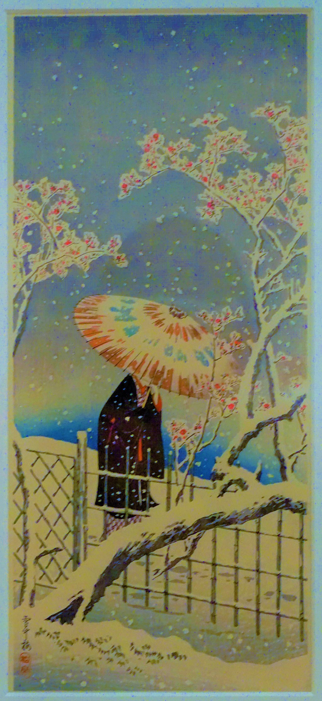

<head>
<meta charset="UTF-8" />
<meta name="keywords" content="drawing, painting" />
<meta name="description" content="drawings by Sunjy" />
<title>Sunjy</title>
<link rel="shortcut icon" type="image/x-icon" href="../../mImages/mCommon/favicon.ico" media="screen" />
<link rel="stylesheet" type="text/css" href="../../mCsses/mCommon/mCssA.css" />
<link rel="stylesheet" type="text/css" href="../../mCsses/mCommon/mCssB.css" />
<link rel="stylesheet" type="text/css" href="../../mCsses/mCommon/mCssC.css" />
<link rel="stylesheet" type="text/css" href="../../mCsses/mCommon/mCssD.css" />
<link rel="stylesheet" type="text/css" href="../../mCsses/mContent/mCssA.css" />
<link rel="stylesheet" type="text/css" href="../../mCsses/mContent/mCssB.css" />
<link rel="stylesheet" type="text/css" href="../../mCsses/mContent/mCssC.css" />
<link rel="stylesheet" type="text/css" href="../../mCsses/mContent/mCssD.css" />
</head>
<script type="text/javascript" src="../../mScripts/mContent/mContentAA.js" /></script>
<script type="text/javascript" src="../../mScripts/mContent/mContentAB.js" /></script>
<script type="text/javascript" src="../../mScripts/mContent/mContentAC.js" /></script>
<script type="text/javascript" src="../../mScripts/mContent/mContentAD.js" /></script>
<script type="text/javascript"></script> 
<script type="text/javascript">
document.write('<div class="mImgAbsolute"></div>');
/*
document.write('<p class="mFontSizeBColor" />From a white paper...</p>');
document.write('<table class="center"><tr><td>');
document.write('');
document.write('</td></tr></table>');
*/
</script>


<script type="text/javascript">
document.write('<p class="mFontSizeBColor" />Figure with Parasol, Protect against Snow</p>');
document.write('<p class="mFontSizeSColor" />“Figure with Parasol, Protect against Snow” by Takahashi Hiroaki depicts a woman in traditional Japanese winter clothes with Parasol to protect her against the snow, making her way along a fence. Takahashi Hiroaki also was known as Shōtei  was a 20th-century Japanese woodblock artist in the ‘shin hanga’ art movement.<br><br>In 1907, as a successful artist, Takahashi Hiroaki was recruited by Shōzaburō Watanabe to contribute to the ‘shin hanga’ or “new prints” art movement in Japan. Watanabe helped to fulfill the Western demand for Ukiyo-e woodblock prints, which were similar to the historical masters of that genre, including Hiroshige. In 1923 the Great Kanto earthquake and fire destroyed Watanabe’s facilities, which included all the Shin Hanga woodblocks. Takahashi had to recreate the designs destroyed in the Great Kanto Earthquake, and he also continued to produce new woodblocks.<br></p>');
document.write('<table class="center" /><tr><td>');
document.write('<br>In 1907, as a successful artist, Takahashi Hiroaki was recruited by Shōzaburō Watanabe to contribute to the ‘shin hanga’ or “new prints” art movement in Japan. Watanabe helped to fulfill the Western demand for Ukiyo-e woodblock prints, which were similar to the historical masters of that genre, including Hiroshige. In 1923 the Great Kanto earthquake and fire destroyed Watanabe’s facilities, which included all the Shin Hanga woodblocks. Takahashi had to recreate the designs destroyed in the Great Kanto Earthquake, and he also continued to produce new woodblocks.<br>" />');
document.write('</td></tr></table>');
</script>


